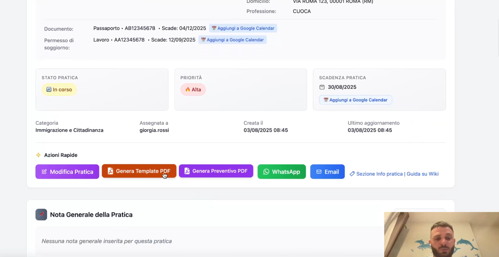

Dettaglio Pratica in PraticaFlow: tutto in una pagina

La pagina Dettaglio Pratica ti permette di gestire un’intera pratica senza saltare tra schermate diverse: riepilogo, documenti, appuntamenti, task, pagamenti e note, tutto nello stesso posto.
È la vista ideale per chi deve lavorare in velocità e aggiornare le informazioni in tempo reale mentre parla con il cliente o coordina il team.
Cosa trovi nel Dettaglio Pratica
- Riepilogo: stato pratica, priorità, categoria, scadenze principali.
- Documenti: upload rapido, anteprima, checklist richieste e collegamento automatico al cliente.
- Appuntamenti: calendario collegato (Google Calendar), note e promemoria.
- Task: attività assegnate, stato e priorità con tracciamento chiaro.
- Pagamenti: importi, scadenze, ricevute e storico incassi.
- Timeline attività: log aggiornamenti e azioni svolte.
Workflow consigliato
- Controlla il riepilogo e verifica scadenze/priorità.
- Carica o richiedi i documenti mancanti (usa la checklist).
- Pianifica appuntamenti e assegna i task al team.
- Registra pagamenti e allega ricevute.
- Monitora la timeline per avere tutto tracciato.